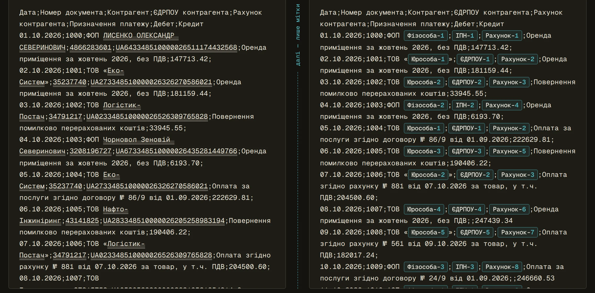
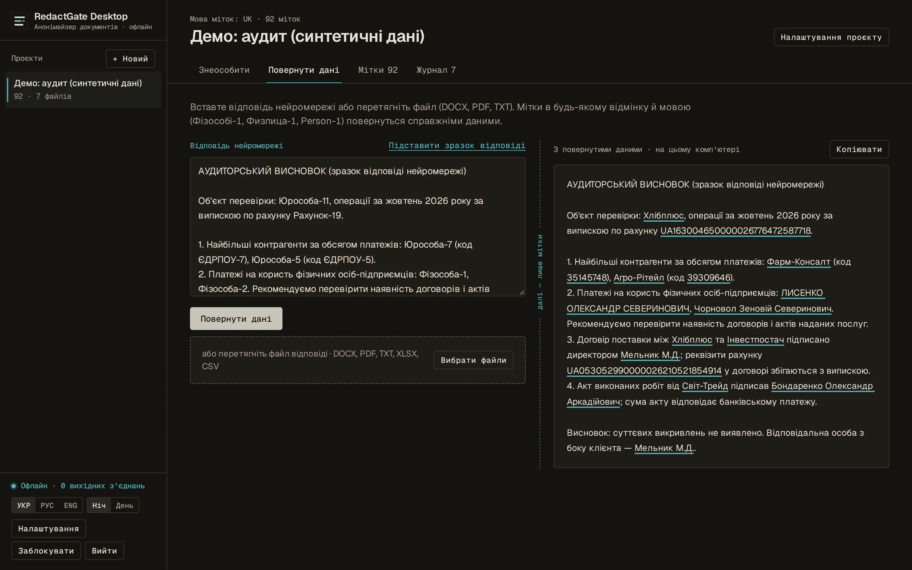
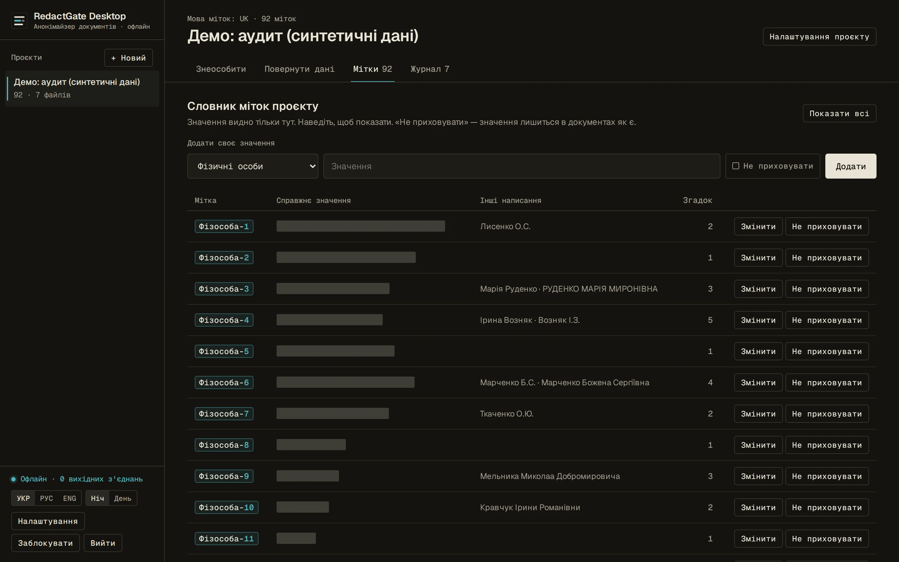

Перетягніть виписки, договори й акти. Програма замінить людей і компанії на «Фізособа-1», «Юрособа-1», рахунки й коди — на свої мітки. Несіть копії в ChatGPT, Claude чи Gemini, а відповідь вставте назад: справжні імена й реквізити повернуться на місце.
Перетащите выписки, договоры и акты. Программа заменит людей и компании на «Физлицо-1», «Юрлицо-1», счета и коды — на свои метки. Несите копии в ChatGPT, Claude или Gemini, а ответ вставьте обратно: настоящие имена и реквизиты вернутся на место.
Словник міток лишається на вашому комп'ютері, зашифрований вашим паролем. 0 вихідних з'єднань — перевірено.
Словарь меток остаётся на вашем компьютере, зашифрованный вашим паролем. 0 исходящих соединений — проверено.
Усередині проєкту однакове значення отримує одну мітку в усіх файлах: «ТОВ «Альфа»» з договору і «АЛЬФА ТОВ» з виписки стануть тією самою Юрособою-2.
Внутри проекта одинаковое значение получает одну метку во всех файлах: «ООО «Альфа»» из договора и «АЛЬФА ООО» из выписки станут тем же Юрлицом-2.
PDF, DOCX, XLSX, PPTX, CSV, TXT і скани. На виході — файли того самого формату: таблиці лишаються таблицями, форматування договору на місці, метадані «автор» теж знеособлені.
PDF, DOCX, XLSX, PPTX, CSV, TXT и сканы. На выходе — файлы того же формата: таблицы остаются таблицами, форматирование договора на месте, метаданные «автор» тоже обезличены.
Завантажуйте копії в ChatGPT, Claude, Gemini чи корпоративний чат. Суми й дати лишаються, тож аналіз, звірка й висновок працюють як зазвичай.
Загружайте копии в ChatGPT, Claude, Gemini или корпоративный чат. Суммы и даты остаются, поэтому анализ, сверка и заключение работают как обычно.
Вставте текст відповіді або перетягніть файл. Мітки в будь-якому відмінку («з Фізособою-1», «Юрлица-2») стають справжніми іменами. Ваш власний документ повертається байт у байт.
Вставьте текст ответа или перетащите файл. Метки в любом падеже («с Физлицом-1», «Юрособи-2») становятся настоящими именами. Ваш собственный документ возвращается байт в байт.



PDF · DOCX · XLSX · PPTX · CSV · TXT · PNG/JPG/TIFF (OCR Tesseract) · мітки: Фізособа-1 / Физлицо-1 / Person-1
Кнопка «Відкрити демо аудитора» створює проєкт на синтетичних даних (реальних клієнтів там немає), знеособлює 7 файлів і дає зразок висновку з мітками. Повернення робить із нього документ зі справжніми назвами.
Кнопка «Открыть демо аудитора» создаёт проект на синтетических данных (реальных клиентов там нет), обезличивает 7 файлов и даёт образец заключения с метками. Возврат делает из него документ с настоящими названиями.
| Мережа | Програма слухає тільки 127.0.0.1 і сама блокує будь-яке з'єднання назовні. Перевірено: Windows-збірка у Wine та Linux-пакет у контейнерах без мережі, AppImage під strace — 0 мережевих з'єднань. |
| Сховище міток | Один файл на комп'ютері. Значення — AES-256-GCM, ключ із вашого пароля через scrypt. Назви проєктів і файлів теж зашифровані. |
| Точність (синтетичні дані) | 5 синтетичних справ, 822 значення: знайдено 100% ПІБ, компаній, рахунків, кодів. Окремий набір фраз, написаних без підгонки правил, дав 87,5% по людях/компаніях/рахунках; пропуски виправлено. Перед відправкою все одно гляньте на копію. |
| Повернення | Свій знеособлений документ повертається точно: TXT і CSV — байт у байт, DOCX і XLSX — текст кожного абзацу й клітинки, PDF — текст сторінок. |
| Підпис коду | Установники поки не підписані сертифікатом. Windows покаже SmartScreen («Докладніше → Все одно запустити»), macOS — «Відкрити» через правий клік. |
| Скани | Розпізнавання сканів потребує Tesseract OCR на комп'ютері (у Linux-пакеті — рекомендована залежність). Без нього скан не обробляється й файл не видається. |
| Сеть | Программа слушает только 127.0.0.1 и сама блокирует любое соединение наружу. Проверено: Windows-сборка в Wine и Linux-пакет в контейнерах без сети, AppImage под strace — 0 сетевых соединений. |
| Хранилище меток | Один файл на компьютере. Значения — AES-256-GCM, ключ из вашего пароля через scrypt. Названия проектов и файлов тоже зашифрованы. |
| Точность (синтетические данные) | 5 синтетических дел, 822 значения: найдено 100% ФИО, компаний, счетов, кодов. Отдельный набор фраз, написанных без подгонки правил, дал 87,5% по людям/компаниям/счетам; пропуски исправлены. Перед отправкой всё равно взгляните на копию. |
| Возврат | Свой обезличенный документ возвращается точно: TXT и CSV — байт в байт, DOCX и XLSX — текст каждого абзаца и ячейки, PDF — текст страниц. |
| Подпись кода | Установщики пока не подписаны сертификатом. Windows покажет SmartScreen («Подробнее → Выполнить в любом случае»), macOS — «Открыть» через правый клик. |
| Сканы | Распознавание сканов требует Tesseract OCR на компьютере (в Linux-пакете — рекомендуемая зависимость). Без него скан не обрабатывается и файл не выдаётся. |
| ОС | Файл | ||
|---|---|---|---|
| Windows 10/11 | RedactGate-Desktop-Setup-0.1.0.exe | установник, вікно в Edge/Chrome | 33 MB |
| macOS 13+ (Apple Silicon) | RedactGate-Desktop-0.1.0-macOS-arm64.dmg | перетягнути в Applications | — |
| Linux (Ubuntu 22.04+) | RedactGate-Desktop-0.1.0-x86_64.AppImage | chmod +x і запустити | 61 MB |
| Debian / Ubuntu | redactgate-desktop_0.1.0_amd64.deb | sudo apt install ./…deb | 48 MB |
SHA-256: SHA256SUMS.txt · AGPL-3.0 · github.com/ctmakc/redactgate